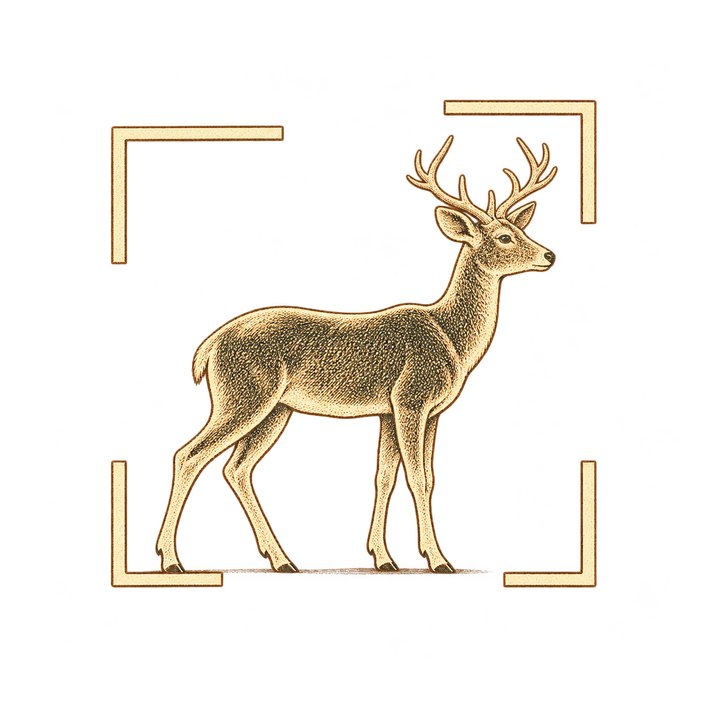

← HOMEPick a question.
FOUR WAYS INTO THE WORK
Pick a question.
Follow the work.
Robotics, computer vision, healthcare AI, and conservation & geospatial research. Every illustration on the landing page opens one of these areas.
01 / FOUR AREAS

Robotics & Embedded AI
Navigation, spatial memory, manipulation and the difficult work of turning perception into action.
4 PROJECTS02 / FOUR AREAS

Computer Vision & Applied AI
Image understanding, applied AI, careful evaluation and experiments that explain what models actually do.
5 PROJECTS03 / FOUR AREAS

Healthcare, CV & AI
Professional research and client work first, followed by medical imaging, pose-based assessment and health-related builds.
6 PROJECTS + PROFESSIONAL EXPERIENCE04 / FOUR AREAS
Conservation & Geospatial AI
Conservation computer vision, camera-trap reliability, species identification, remote sensing and geospatial analysis.
4 PROJECTS